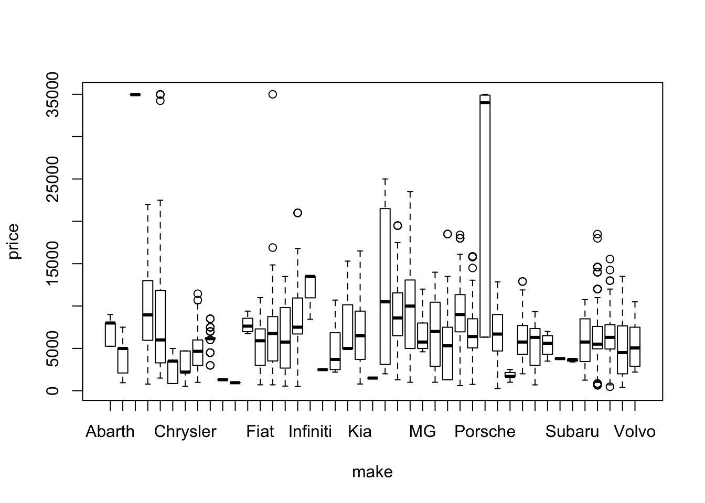
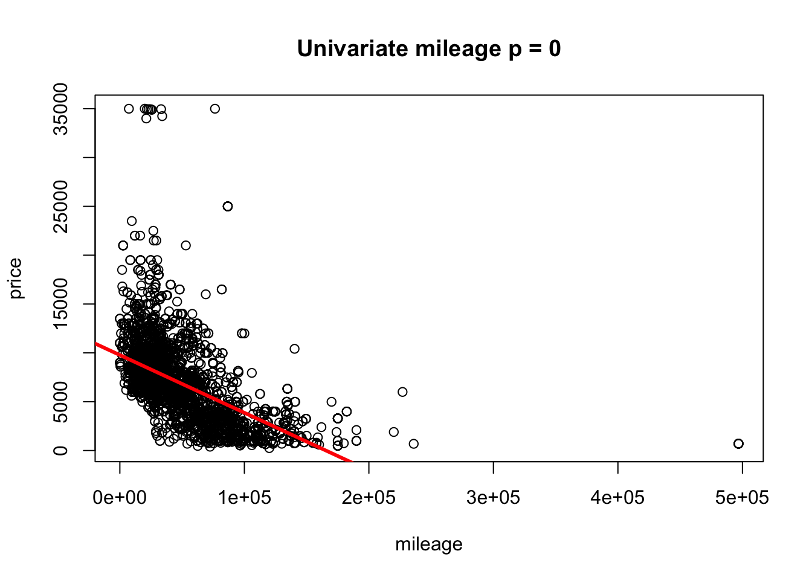
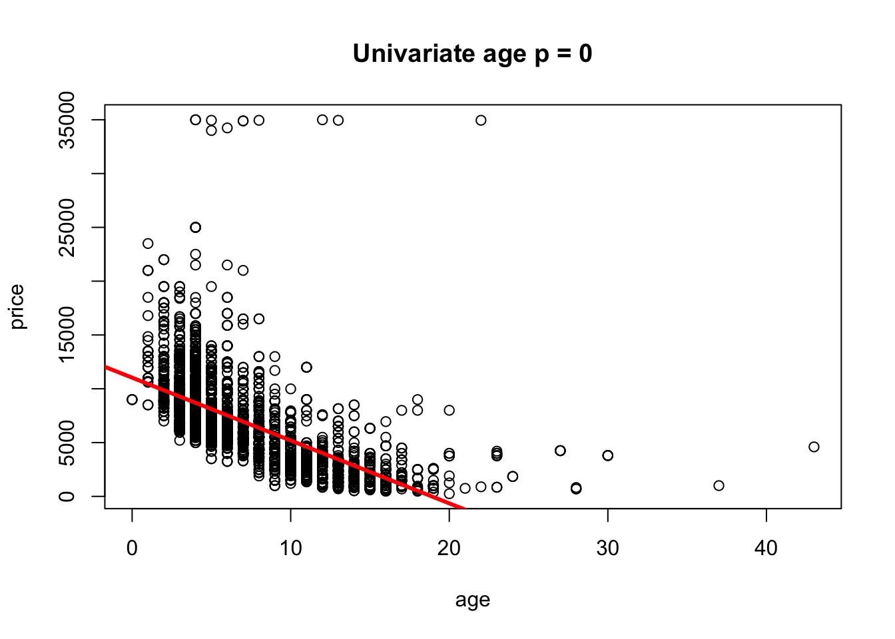

Section 11 Real life lm() example
11.1 Summary
This is only the first orientation with the dataset.
This example:
- Reads data
- Explores missingnes and does simplistic imputation
- Looks at univariate regression/anova for each variable: all look highly significant
- Multivariate model with all variables: suggests dropping owners
- drop1 suggests keeping only make, engine.size and mileage
Importantly, the example does NOT analyze the normality of residuals in the models etc. It does NOT considers interactions.
Further directions may also include:
- transformation of variables
- using generalized models
- using add1
- estimating accuracy of prediction etc.
11.2 Start section
11.3 Read data
data_file="/Users/alexey/OneDrive/Documents/Home/Alex/stat_in_r_Mar2021/example/structure_data.csv"
data.df <- read.csv(data_file)
rm(data_file)11.4 Explore and prepare data
Data clean-up and preparation is a separate large realm in data science.
Here we just check that data look well structured, check the data size, types of variables, missingness.
11.4.1 Overall size and structure
dim(data.df)## [1] 3780 6str(data.df)## 'data.frame': 3780 obs. of 6 variables:
## $ mileage : num 32000 69000 95300 85962 64000 ...
## $ manufactured.year: int 2015 2012 2001 2010 2013 2004 2003 2012 2013 2012 ...
## $ engine.size : num 1.6 2 3.2 2.7 1.8 3 5 2.1 1.8 2 ...
## $ owners : int NA 3 6 NA 1 4 3 3 3 2 ...
## $ price : num 7495 7000 8000 7490 7000 ...
## $ make : Factor w/ 43 levels "Abarth","Alfa Romeo",..: 8 4 25 4 4 5 25 25 24 5 ...11.4.2 Missingness
count.na.udf <- function(x)(sum(is.na(x)))
count_na <- apply(data.df,2,count.na.udf)
count_na## mileage manufactured.year engine.size owners
## 0 0 2 1968
## price make
## 0 0count_na/nrow(data.df)## mileage manufactured.year engine.size owners
## 0.0000000000 0.0000000000 0.0005291005 0.5206349206
## price make
## 0.0000000000 0.0000000000rm(count.na.udf,count_na)11.4.3 Impute missed
Its a simplistic procedure, with its pros and contras.
Strictly speaking, it may not be necessary if lm() has its own imputation in place. However, it may not be imediately clear what exactly this default implicit procedure is …
So, it may be useful to deal with missed data explicitly to be sure how they were treated.
On a technical point: I recollect that there could be a specialized function for applying mean in place of missed data.
mean_engine_size <- mean(data.df$engine.size, na.rm=T)
mean_engine_size -> data.df$engine.size[is.na(data.df$engine.size)]
mean_owners <- mean(data.df$owners, na.rm=T)
mean_owners -> data.df$owners[is.na(data.df$owners)]
any(is.na(data.df))## [1] FALSErm(mean_owners, mean_engine_size)11.4.4 Calculate age
Our previous knowledge in the field suggests that age may be a better representation for manufactured.year
Should manufactured.year be removed from analysis after making age?
May including both variables confuse the model (because of collinearuty).
data.df <- data.frame(data.df,age=2021-data.df$manufactured.year)
str(data.df)## 'data.frame': 3780 obs. of 7 variables:
## $ mileage : num 32000 69000 95300 85962 64000 ...
## $ manufactured.year: int 2015 2012 2001 2010 2013 2004 2003 2012 2013 2012 ...
## $ engine.size : num 1.6 2 3.2 2.7 1.8 3 5 2.1 1.8 2 ...
## $ owners : num 2.46 3 6 2.46 1 ...
## $ price : num 7495 7000 8000 7490 7000 ...
## $ make : Factor w/ 43 levels "Abarth","Alfa Romeo",..: 8 4 25 4 4 5 25 25 24 5 ...
## $ age : num 6 9 20 11 8 17 18 9 8 9 ...11.5 Explore in a univariate manner
11.5.1 Anova for categorical variable makes
data.df %>%
group_by(make) %>%
summarise(count=n(),
mean_price=mean(price),
mean_mileage=mean(mileage),
mean_age=mean(age),
mean_price=mean(price),
mean_owners=mean(owners),
mean_engine=mean(engine.size)) %>%
arrange(desc(count))## # A tibble: 43 x 7
## make count mean_price mean_mileage mean_age mean_owners mean_engine
## <fct> <int> <dbl> <dbl> <dbl> <dbl> <dbl>
## 1 Vauxhall 715 6188. 44018. 6.09 2.36 1.42
## 2 Ford 286 6502 52934. 7.21 2.46 1.34
## 3 Nissan 269 8673. 39307. 5.90 2.31 1.33
## 4 Hyundai 250 8521 31668. 4.35 2.44 1.30
## 5 Volkswagen 208 5318. 74174. 10.4 3.03 1.51
## 6 Toyota 199 6305. 48149. 8.34 2.10 1.55
## 7 Peugeot 193 6488. 43657. 6.38 2.41 1.39
## 8 Citroen 165 4882. 53608. 8.18 2.40 1.44
## 9 Renault 164 6506. 41006. 6.68 2.37 1.34
## 10 SEAT 156 6342. 53444. 6.63 2.25 1.40
## # … with 33 more rowsboxplot(price~make, data=data.df)
summary(aov(price~make, data=data.df))## Df Sum Sq Mean Sq F value Pr(>F)
## make 42 1.171e+10 278725988 21.38 <2e-16 ***
## Residuals 3737 4.871e+10 13035655
## ---
## Signif. codes: 0 '***' 0.001 '**' 0.01 '*' 0.05 '.' 0.1 ' ' 111.5.2 Univariate lm() for numeric variables
There is a way of doing this in one step …
11.5.2.1 mileage
mileage.lm <- lm(price~mileage, data=data.df)
summary(mileage.lm)##
## Call:
## lm(formula = price ~ mileage, data = data.df)
##
## Residuals:
## Min 1Q Median 3Q Max
## -6878.8 -1971.3 -661.8 1175.8 29729.6
##
## Coefficients:
## Estimate Std. Error t value Pr(>|t|)
## (Intercept) 9.780e+03 9.264e+01 105.57 <2e-16 ***
## mileage -5.909e-02 1.469e-03 -40.23 <2e-16 ***
## ---
## Signif. codes: 0 '***' 0.001 '**' 0.01 '*' 0.05 '.' 0.1 ' ' 1
##
## Residual standard error: 3346 on 3778 degrees of freedom
## Multiple R-squared: 0.2999, Adjusted R-squared: 0.2997
## F-statistic: 1618 on 1 and 3778 DF, p-value: < 2.2e-16mileage.lm.p=coefficients(summary(mileage.lm))[2,"Pr(>|t|)"]
plot(price~mileage, data=data.df, main=paste("Univariate mileage p =",round(mileage.lm.p,5)))
abline(mileage.lm, col="red", lwd=3)
rm(mileage.lm,mileage.lm.p)11.5.2.2 age
age.lm <- lm(price~age, data=data.df)
summary(age.lm)##
## Call:
## lm(formula = price ~ age, data = data.df)
##
## Residuals:
## Min 1Q Median 3Q Max
## -4784 -1868 -717 898 36767
##
## Coefficients:
## Estimate Std. Error t value Pr(>|t|)
## (Intercept) 11038.23 95.84 115.18 <2e-16 ***
## age -584.32 11.21 -52.12 <2e-16 ***
## ---
## Signif. codes: 0 '***' 0.001 '**' 0.01 '*' 0.05 '.' 0.1 ' ' 1
##
## Residual standard error: 3050 on 3778 degrees of freedom
## Multiple R-squared: 0.4183, Adjusted R-squared: 0.4182
## F-statistic: 2717 on 1 and 3778 DF, p-value: < 2.2e-16age.lm.p=coefficients(summary(age.lm))[2,"Pr(>|t|)"]
plot(price~age, data=data.df, main=paste("Univariate age p =",round(age.lm.p,5)))
abline(age.lm, col="red", lwd=3)rm(age.lm,age.lm.p)11.5.2.3 owners
owners.lm <- lm(price~owners, data=data.df)
summary(owners.lm)##
## Call:
## lm(formula = price ~ owners, data = data.df)
##
## Residuals:
## Min 1Q Median 3Q Max
## -7583.5 -2683.5 -343.3 1862.9 31164.2
##
## Coefficients:
## Estimate Std. Error t value Pr(>|t|)
## (Intercept) 9651.66 161.15 59.89 <2e-16 ***
## owners -1173.18 60.43 -19.41 <2e-16 ***
## ---
## Signif. codes: 0 '***' 0.001 '**' 0.01 '*' 0.05 '.' 0.1 ' ' 1
##
## Residual standard error: 3813 on 3778 degrees of freedom
## Multiple R-squared: 0.09071, Adjusted R-squared: 0.09047
## F-statistic: 376.9 on 1 and 3778 DF, p-value: < 2.2e-16owners.lm.p=coefficients(summary(owners.lm))[2,"Pr(>|t|)"]
plot(price~owners, data=data.df, main=paste("Univariate owners p =",round(owners.lm.p,5)))
abline(owners.lm, col="red", lwd=3)rm(owners.lm,owners.lm.p)11.5.2.4 engine.size
engine.size.lm <- lm(price~engine.size, data=data.df)
summary(engine.size.lm)##
## Call:
## lm(formula = price ~ engine.size, data = data.df)
##
## Residuals:
## Min 1Q Median 3Q Max
## -7582.8 -2853.8 -75.1 2179.3 26531.7
##
## Coefficients:
## Estimate Std. Error t value Pr(>|t|)
## (Intercept) 4682.0 231.5 20.224 <2e-16 ***
## engine.size 1393.1 148.8 9.362 <2e-16 ***
## ---
## Signif. codes: 0 '***' 0.001 '**' 0.01 '*' 0.05 '.' 0.1 ' ' 1
##
## Residual standard error: 3954 on 3778 degrees of freedom
## Multiple R-squared: 0.02267, Adjusted R-squared: 0.02241
## F-statistic: 87.65 on 1 and 3778 DF, p-value: < 2.2e-16engine.size.lm.p=coefficients(summary(engine.size.lm))[2,"Pr(>|t|)"]
plot(price~engine.size, data=data.df, main=paste("Univariate engine.size p =",round(engine.size.lm.p,5)))
abline(engine.size.lm, col="red", lwd=3)
rm(engine.size.lm,engine.size.lm.p)11.6 Model with all variables
It seems that owners are not very informative: could it be because we imputed half of them
full.m <- lm(price~., data=data.df)
#summary(full.m)
anova(full.m)## Analysis of Variance Table
##
## Response: price
## Df Sum Sq Mean Sq F value Pr(>F)
## mileage 1 1.8119e+10 1.8119e+10 4178.8708 <2e-16 ***
## manufactured.year 1 8.2483e+09 8.2483e+09 1902.3510 <2e-16 ***
## engine.size 1 1.0903e+10 1.0903e+10 2514.5751 <2e-16 ***
## owners 1 1.0695e+06 1.0695e+06 0.2467 0.6195
## make 42 6.9638e+09 1.6580e+08 38.2404 <2e-16 ***
## Residuals 3733 1.6186e+10 4.3359e+06
## ---
## Signif. codes: 0 '***' 0.001 '**' 0.01 '*' 0.05 '.' 0.1 ' ' 111.7 Drop1
I think that drop1 suggests to keep only make, engine.size, mileage
https://stats.stackexchange.com/questions/4639/interpreting-the-drop1-output-in-r
drop1.m <- drop1(full.m, test="F")
#drop1.m
drop1.m[order(drop1.m$`Pr(>F)`),]## Single term deletions
##
## Model:
## price ~ mileage + manufactured.year + engine.size + owners +
## make + age
## Df Sum of Sq RSS AIC F value Pr(>F)
## make 42 6963803785 2.3150e+10 59083 38.2404 <2e-16 ***
## engine.size 1 3549033541 1.9735e+10 58562 818.5316 <2e-16 ***
## mileage 1 1900987496 1.8087e+10 58232 438.4344 <2e-16 ***
## owners 1 4803073 1.6191e+10 57813 1.1078 0.2926
## <none> 1.6186e+10 57814
## manufactured.year 0 0 1.6186e+10 57814
## age 0 0 1.6186e+10 57814
## ---
## Signif. codes: 0 '***' 0.001 '**' 0.01 '*' 0.05 '.' 0.1 ' ' 1rm(full.m,drop1.m)11.8 Optimal model
optimal.m <- lm(price~make + engine.size + mileage, data=data.df)
anova(optimal.m)## Analysis of Variance Table
##
## Response: price
## Df Sum Sq Mean Sq F value Pr(>F)
## make 42 1.1706e+10 2.7873e+08 37.793 < 2.2e-16 ***
## engine.size 1 1.1660e+08 1.1660e+08 15.810 7.136e-05 ***
## mileage 1 2.1052e+10 2.1052e+10 2854.492 < 2.2e-16 ***
## Residuals 3735 2.7546e+10 7.3750e+06
## ---
## Signif. codes: 0 '***' 0.001 '**' 0.01 '*' 0.05 '.' 0.1 ' ' 111.9 Predict
new_data.df <- list(make=c("Citroen","Audi","Mercedes-Benz"),
engine.size=c(1,1.5,3),
mileage=c(70000,50000,10000))
predicted_price <- predict(optimal.m,newdata = new_data.df)
new_data.df <- data.frame(new_data.df, predicted_price)
new_data.df## make engine.size mileage predicted_price
## 1 Citroen 1.0 70000 2653.858
## 2 Audi 1.5 50000 10086.041
## 3 Mercedes-Benz 3.0 10000 15371.881rm(predicted_price)